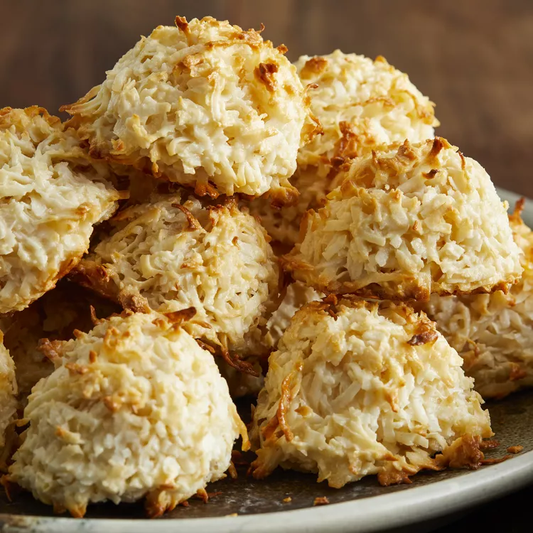

Coconut macaroons

Description
This coconut macaroons recipe has won many first-place blue ribbons at my state fair. They are very simple to make.
Ingredients
- 5 ½ cups flaked coconut
- ⅔ cup all-purpose flour
- ¼ teaspoon salt
- 1 (14 ounce) can sweetened condensed milk
- 2 teaspoons vanilla extract
Steps
- Preheat the oven to 350 degrees F (175 degrees C). Line cookie sheets with parchment paper or aluminum foil.
- Stir together coconut, flour, and salt in a large bowl. Mix in sweetened condensed milk and vanilla using your hands until well blended.
- Use an ice cream scoop to drop dough onto the prepared cookie sheets. Cookies should be about golf ball size.
- Bake for 12 to 15 minutes in the preheated oven, until coconut is toasted.